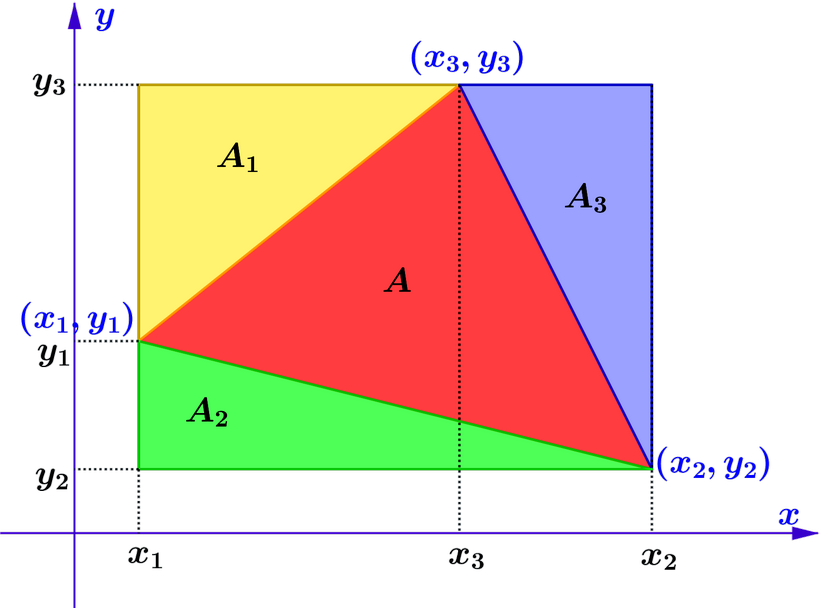

|  |
|---|
$\begin{aligned}
A_{1}+A_{2}+A_{3}+A &=\left(x_{2}-x_{1}\right)\left(y_{3}-y_{2}\right) \\\\
&=x_{1} y_{2}+x_{2} y_{3}-x_{1} y_{3}-x_{2} y_{2} \\\\
&=\displaystyle\frac{1}{2}\left(2 x_{1} y_{2}+2 x_{2} y_{3}-2 x_{1} y_{3}-2 x_{2} y_{2}\right) \\\\
A_{1} &=\displaystyle\frac{1}{2}\left(x_{3}-x_{1}\right)\left(y_{3}-y_{1}\right) \\\\
&=\displaystyle\frac{1}{2}\left(x_{1} y_{1}+x_{3} y_{3}-x_{1} y_{3}-x_{3} y_{1}\right) \\\\
A_{2} &=\displaystyle\frac{1}{2}\left(x_{2}-x_{1}\right)\left(y_{1}-y_{2}\right) \\\\
&=\displaystyle\frac{1}{2}\left(x_{1} y_{2}+x_{2} y_{1}-x_{1} y_{1}-x_{2} y_{2}\right) \\\\
A_{3} \quad &=\displaystyle\frac{1}{2}\left(x_{2}-x_{3}\right)\left(y_{3}-y_{2}\right) \\\\
&=\displaystyle\frac{1}{2}\left(x_{2} y_{3}+x_{3} y_{2}-x_{2} y_{2}-x_{3} y_{3}\right) \\\\
&=\displaystyle\frac{1}{2}\left(x_{1} y_{2}+x_{2} y_{3}+x_{3} y_{1}-x_{2} y_{1}-x_{3} y_{2}-x_{1} y_{3}\right) \\\\
&=\displaystyle\frac{1}{2}\left[\left(x_{1} y_{2}+x_{2} y_{3}+x_{3} y_{1}\right)-\left(x_{2} y_{1}+x_{3} y_{2}+x_{1} y_{3}\right)\right]
\end{aligned}$
The above complicated formula can be arranged and written as
Note that this rule is only applicable when the vertices are considered in an anticlockwise direction.